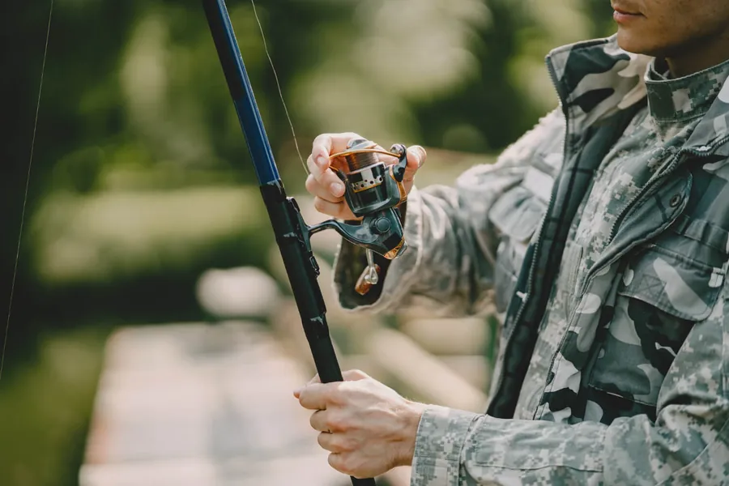
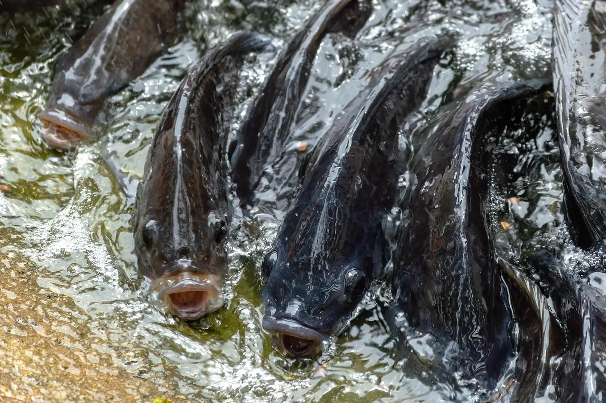
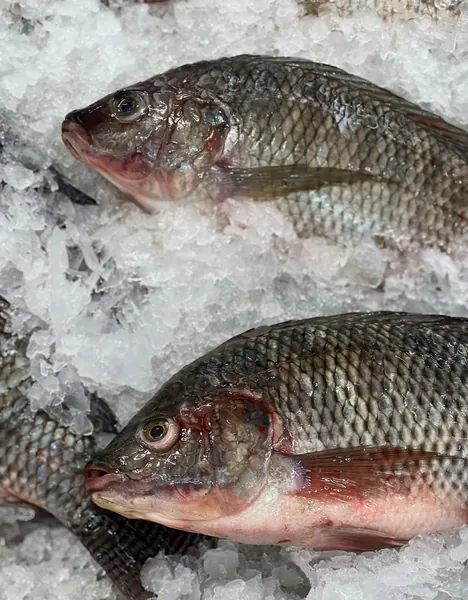
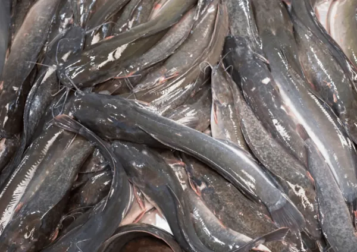
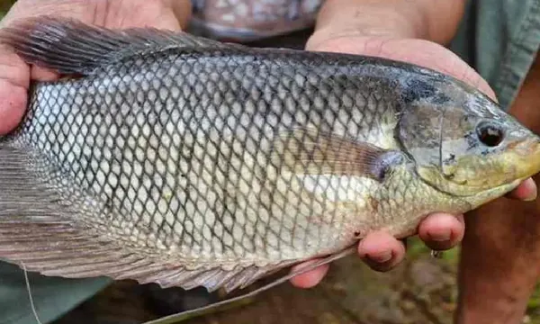
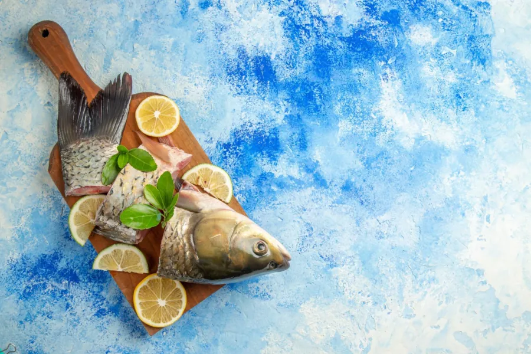
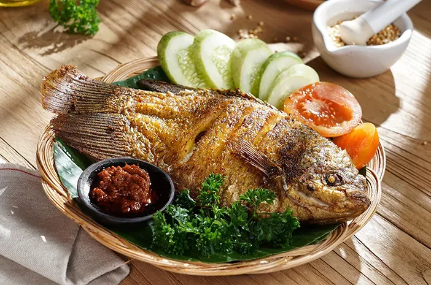
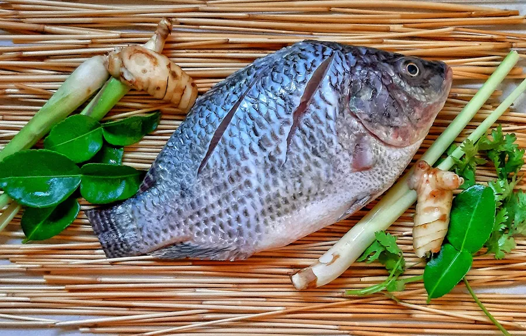

Kolam Pemancingan
Pengisian kolam menjelang akhir pekan dan saat lomba.
- Ukuran yang biasa diambil
- 300–800 gram/ekor, disortir seragam
- Kondisi ikan
- Hidup sampai lokasi
- Pola pengiriman
- Dikonfirmasi H-2, dikirim pagi

Pasokan rutin untuk kolam pemancingan, toko ikan, restoran, dan rumah makan.
Cek stok tanpa komitmen.
Ukuran ditulis dalam satuan yang biasa dipakai pembeli. Ketersediaan mengikuti hasil panen.

Ukuran: 500–700 gram/ekor
Ketersediaan: Tersedia
Ukuran konsumsi untuk rumah makan dan toko ikan segar.
Minimum order 30 kg
Tanya Harga Ikan Nila
Ukuran: 8–10 ekor/kg
Ketersediaan: Tersedia
Ukuran warung dan rumah makan harian.
Minimum order 30 kg
Tanya Harga Ikan Lele
Ukuran: 500 gram – 1 kg/ekor
Ketersediaan: Stok terbatas
Menu gurame bakar dan goreng di restoran.
Minimum order 20 kg
Tanya Harga Ikan GurameUkuran: 300–800 gram/ekor
Ketersediaan: Tersedia
Isi kolam pemancingan harian.
Minimum order 50 kg
Tanya Harga Ikan MasUkuran: 700 gram – 1,2 kg/ekor
Ketersediaan: Tersedia
Menu pindang dan olahan fillet.
Tanya Harga Ikan PatinUkuran: 300–600 gram/ekor
Ketersediaan: Tersedia
Kolam pemancingan dan menu goreng.
Tanya Harga Ikan BawalUkuran: 250–500 gram/ekor
Ketersediaan: Stok terbatas
Kebutuhan pedagang ikan segar.
Tanya Harga Ikan MujairHarga mengikuti ukuran dan jumlah — hubungi untuk harga hari ini.
Ukuran, kondisi ikan saat dikirim, dan pola pengiriman menyesuaikan cara tiap usaha bekerja.

Pengisian kolam menjelang akhir pekan dan saat lomba.

Pasokan untuk dijual kembali dengan harga grosir.

Ukuran per porsi yang konsisten untuk dapur.

Kebutuhan operasional harian dengan jumlah tetap.
Di luar daftar ini, silakan tanyakan dulu — sebagian masih bisa dijangkau dengan penyesuaian minimum order.
Empat tahap yang dijalankan setiap kali pesanan disiapkan.
Ikan dipisahkan per ukuran sebelum dimuat, sehingga yang dikirim sesuai kesepakatan — bukan campuran sisa panen.
Penimbangan dilakukan setelah ikan ditiriskan, disaksikan bersama saat serah terima.
Pengangkutan disiapkan sesuai peruntukan: ikan hidup untuk kolam pemancingan, ikan segar berpendingin untuk dapur.
Berangkat pagi agar sampai sebelum jam sibuk pelanggan, dengan rute yang dikelompokkan per area.
Sebutkan jenis ikan, ukuran, perkiraan jumlah, lokasi, dan kapan dibutuhkan.
Kami informasikan stok yang ada, ukuran tersedia, harga hari itu, dan minimum order.
Anda konfirmasi jumlah akhir dan jadwal pengiriman.
Pesanan disiapkan dan dikirim ke lokasi usaha Anda. Dibayar saat barang diterima.
Cek stok tanpa komitmen — banyak yang menanyakan harga dulu untuk perbandingan.
Balong Ceuyah beroperasi di Jl. Contoh Raya No. 10, Cileunyi, Kabupaten Bandung, melayani pengiriman ke Seluruh Jawa Barat.
30 kg per pengiriman (dalam kota) Untuk luar kota, 80 kg per pengiriman (luar kota).
Ukuran dapat diminta dan akan kami sesuaikan dengan ketersediaan stok saat itu.
Kami mengirim ke Seluruh Jawa Barat. Di luar daftar ini, silakan tanyakan dulu — sebagian masih bisa dijangkau dengan penyesuaian minimum order.
Ongkir: Gratis untuk pesanan di atas 100 kg dalam kota; di bawah itu menyesuaikan jarak.
Bisa diambil sendiri di lokasi pada jam operasional.
Pesan sebelum 16.00 untuk kirim besok pagi. Jadwal berangkat: Senin–Minggu, berangkat 05.00–08.00 WIB.
Tunai saat terima atau transfer bank. Dibayar saat barang diterima.
Nota diberikan setiap pengiriman.
Ikan yang mati saat serah terima diganti atau dipotong dari tagihan, dihitung bersama di lokasi sebelum kendaraan meninggalkan tempat.
Bila ukuran meleset dari kesepakatan, pesanan boleh ditolak saat serah terima tanpa biaya, atau disesuaikan pada pengiriman berikutnya.
H-2 untuk pesanan di atas 200 kg.
Pesanan rutin dijadwalkan di awal dan dikonfirmasi ulang sehari sebelum pengiriman.
Pertanyaan lain? Tanyakan langsung
Sebutkan jenis ikan, ukuran, perkiraan jumlah, lokasi, dan kapan dibutuhkan — kami balas dengan stok, harga, dan jadwal kirim yang tersedia.
0812-3456-7890 · Setiap hari, 05.00–20.00 WIB